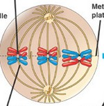

impQs
non-diszjunkció
- lényege ➜ egyik kromoszómához nem kapcsolódnak 'mikrotubulusok
- következménye ➜ aneuploid sejt

- típusai ➜ mitotikus / meiotikus
- miotikus ➜ súlyossága attól függ mikor és milyen sejttípus osztódásakor következtek be: korai esetében sok sejtet fog érinteni, így súlyosabb következményekkel jár (mozaicizmus)
- meiotikus ➜ mely osztódáskor következik be:
- Meiózis I esetében ➜ 2triszómia + 2monoszómia!
- Meiózis II esetében ➜ 1triszómia + 1monoszómia + 2normál! ➜ anyákban életkorral nő a Down-kór kockázata /kék/


sejtciklus fázisai - kromoszóma,kromatida,DNS szám (mitózis vs meiózis)
- 1kromatid = 1DNS
- mivel diploid, ezért 23pár kromoszóma van
- azért pár, mert van egy apai meg egy anyai eredetű ➜ homológ kromoszómapárok
- 1kromoszóma állhat 1db vagy 2db kromatidból ➜ G1-ben még csak 1db-ból
- 2db 2kromatidás kromoszóma (melyek homológok) egymás mellé állva tetrádot alkotnak (ezért lesz crossing-over)
- interfázisban persze a kromoszómák kromatin formában vannak, de a számuk ettől még ennyi
- kromoszómaszám jelölésénél jobb-alsó index azt mutatja, hogy hány kromatidból áll!
1DNS mi?
kiinduló helyzetben (G1) miért annyi DNS-e van?
P1-ben(meiózis) mi történik?
| MITÓZIS | G1 | S | G2 | P | M | A | T |
|---|---|---|---|---|---|---|---|
| DNS | 46 | 92 | 92 | 92 | 92 | 46 & 46 | 46 |
| kromoszóma | 461 | 462 | 462 | 462 | 462 | 461 & 461 | 461 |
| MEIÓZIS | G1 | S | G2 | P1 | M1 | A1 | T1 | P2 | M2 | A2 | T2 |
|---|---|---|---|---|---|---|---|---|---|---|---|
| DNS | 46 | 92 | 92 | 92 | 92 | 46 & 46 | 46 | 46 | 46 | 23 & 23 | 23 |
| kromoszóma | 461 | 462 | 462 | 234 | 234 | 232 & 232 | 232 | 232 | 232 | 231 & 231 | 231 |